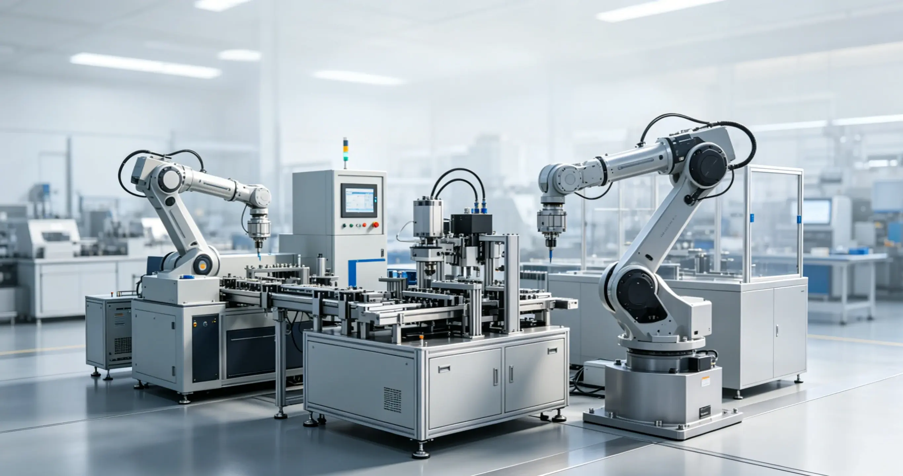

Industrial 3D Printing Technology Applications and Development Trends

1. Overview of Industrial 3D Printing Technology
Industrial 3D printing technology, also known as Additive Manufacturing, is an advanced manufacturing technology based on digital models. Unlike traditional subtractive manufacturing, it builds three-dimensional objects by layer-by-layer material deposition.
2. Main Technology Types
2.1 FDM (Fused Deposition Modeling)
FDM is the most common 3D printing technology, which melts filament materials by heating and extrudes them layer by layer. Suitable for rapid prototyping of plastic parts.
2.2 SLA (Stereolithography)
SLA uses ultraviolet light to cure liquid resin, with high precision and good surface quality, suitable for high-precision parts and mold manufacturing.
2.3 SLM (Selective Laser Melting)
SLM uses laser to selectively melt metal powder, which is currently the most mature metal 3D printing technology, suitable for aerospace, medical and other fields.
2.4 EBM (Electron Beam Melting)
EBM uses electron beam to melt metal powder, suitable for manufacturing large metal parts.
3. Application Scenarios
3.1 Aerospace Field
3D printing technology is widely used in aerospace, including engine components, lightweight structural parts, satellite components, etc.
3.2 Automotive Manufacturing Field
Used for manufacturing customized parts, lightweight structural parts, molds and fixtures, etc.
3.3 Medical Field
Includes applications such as implants, prosthetics, surgical guides, and drug research and development.
3.4 Mold Manufacturing Field
3D printing molds can shorten the development cycle, reduce costs, and are suitable for small-batch production.
4. Technical Advantages
1. Complex structure manufacturing: can manufacture complex geometric shapes that are difficult to achieve with traditional processes
2. Personalized customization: supports single piece or small batch customized production
3. High material utilization: less material waste compared to traditional cutting processing
4. Shorten R&D cycle: rapid prototyping accelerates product development
5. Lightweight design: topology optimization can be achieved to reduce part weight
5. Development Trends
5.1 Material Diversification
More high-performance materials will be developed in the future, including high-temperature alloys, ceramics, composite materials, etc.
5.2 Printing Speed Improvement
Improve printing efficiency by improving printing technology and equipment structure.
5.3 Large-Size Printing
Develop large-scale 3D printing equipment to meet the manufacturing needs of large parts.
5.4 Multi-Material Printing
Realize mixed printing of multiple materials to expand application fields.
5.5 Intelligence and Automation
Combine artificial intelligence and Internet of Things technologies to realize intelligent control of the production process.
6. Challenges
1. High equipment cost: industrial 3D printers are expensive
2. High material cost: special printing materials are relatively expensive
3. Incomplete standards: lack of unified quality standards and testing methods
4. Complex post-processing: post-printing requires polishing, polishing and other processing
7. Future Outlook
With continuous technological progress and gradual cost reduction, industrial 3D printing technology will be applied in more fields and become an important part of intelligent manufacturing.
8. Summary
Industrial 3D printing technology is changing the production mode of traditional manufacturing, bringing new opportunities and challenges to the manufacturing industry. Enterprises should pay attention to technological development trends and introduce 3D printing technology in a timely manner to enhance competitiveness.